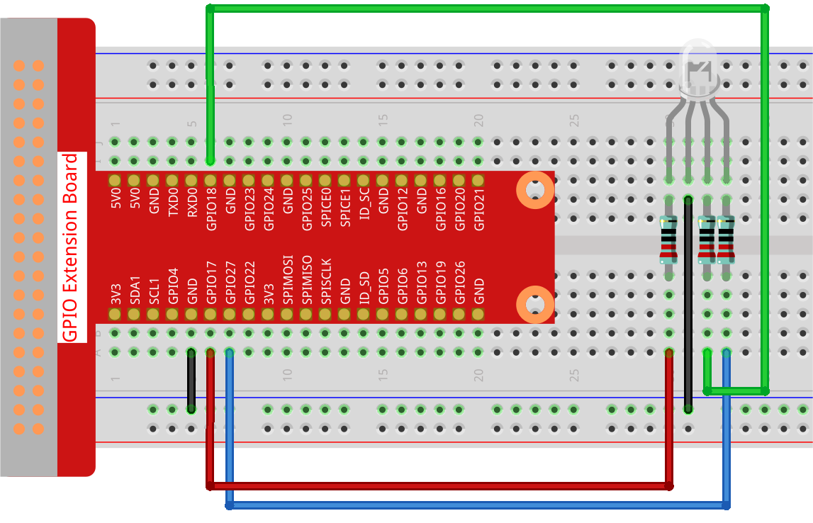

Note
Bonjour et bienvenue dans la communauté Facebook des passionnés de SunFounder Raspberry Pi, Arduino et ESP32 ! Plongez-vous plus profondément dans le monde du Raspberry Pi, Arduino et ESP32 avec d’autres passionnés.
Pourquoi nous rejoindre ?
Support d’experts : Résolvez vos problèmes après-vente et relevez les défis techniques avec l’aide de notre communauté et de notre équipe.
Apprendre & Partager : Échangez des astuces et des tutoriels pour perfectionner vos compétences.
Aperçus exclusifs : Bénéficiez d’un accès anticipé aux nouvelles annonces de produits.
Réductions spéciales : Profitez de remises exclusives sur nos nouveaux produits.
Promotions festives et tirages au sort : Participez à des promotions spéciales et à des cadeaux durant les fêtes.
üëâ Pr√™t √† explorer et √† cr√©er avec nous ? Cliquez sur [Ici] et rejoignez-nous d√®s aujourd‚Äôhui !
1.1.2 LED RVB
Introduction
Dans ce projet, nous allons contrôler une LED RVB pour qu’elle affiche différentes couleurs.
Composants nécessaires
Pour ce projet, nous aurons besoin des composants suivants :

Schéma de câblage
Après avoir connecté les broches R, G et B à une résistance de limitation de courant, connectez-les respectivement aux GPIO17, GPIO18 et GPIO27. La patte la plus longue (GND) de la LED doit être connectée à la masse (GND) du Raspberry Pi. Lorsque les trois broches reçoivent des valeurs PWM différentes, la LED RVB affichera différentes couleurs.
T-Board Name |
physical |
BCM |
GPIO17 |
Pin 11 |
17 |
GPIO18 |
Pin 12 |
18 |
GPIO27 |
Pin 13 |
27 |

Procédure expérimentale
Étape 1 : Construire le circuit.
Étape 2 : Ouvrir le fichier de code.
cd ~/davinci-kit-for-raspberry-pi/python-pi5
Étape 3 : Exécuter le code.
sudo python3 1.1.2_rgbLed.py
Après l’exécution du code, vous verrez que la LED RVB affiche les couleurs rouge, verte, bleue, jaune, rose et cyan.
Avertissement
Si vous recevez un message d’erreur tel que RuntimeError: Cannot determine SOC peripheral base address, veuillez consulter Si gpiozero ne fonctionne pas..
Code
Note
Vous pouvez Modifier/Réinitialiser/Copier/Exécuter/Arrêter le code ci-dessous.
Mais avant cela, vous devez accéder au chemin source du code comme davinci-kit-for-raspberry-pi/python-pi5. Après modification,
vous pouvez l’exécuter directement pour observer le résultat.
#!/usr/bin/env python3
from gpiozero import RGBLED
from time import sleep
# Définir une liste de couleurs pour la LED RVB au format RVB (Rouge, Vert, Bleu).
# Chaque composant de couleur varie de 0 (éteint) à 1 (intensité maximale).
COLORS = [(1, 0, 0), (0, 1, 0), (0.2, 0.1, 1), (1, 1, 0), (1, 0, 1), (0, 1, 1)]
# Initialiser une LED RVB. Connecter le composant rouge au GPIO 17, le vert au GPIO 18, et le bleu au GPIO 27.
rgb_led = RGBLED(red=17, green=18, blue=27)
try:
# Parcourir en continu les couleurs définies.
while True:
for color in COLORS:
# Régler la LED RVB sur la couleur actuelle.
rgb_led.color = color
# Afficher la couleur actuelle dans la console.
print(f"Color set to: {color}")
# Attendre 1 seconde avant de passer à la couleur suivante.
sleep(1)
except KeyboardInterrupt:
# Gérer une interruption clavier (Ctrl+C) pour sortir de la boucle proprement.
# La gestion des broches GPIO est automatiquement prise en charge par GPIO Zero lors de la fin du script.
pass
Explication du code
Cela importe la classe
RGBLEDde la bibliothèquegpiozeropour contrôler une LED RVB, et la bibliothèquetimepour gérer les pauses dans le code.#!/usr/bin/env python3 from gpiozero import RGBLED from time import sleep # Définir une liste de couleurs pour la LED RVB au format RVB (Rouge, Vert, Bleu). # Chaque composant de couleur varie de 0 (éteint) à 1 (intensité maximale).
La liste
COLORScontient des tuples représentant différentes couleurs au format RVB. En attribuant des valeurs de modulation de largeur d’impulsion (PWM) différentes à chacune des broches R, G et B via l’attributled_rvb.color, la LED peut produire une variété de couleurs. Les valeurs de PWM varient de 0 à 1, où 0 représente aucune intensité (éteint) et 1 représente l’intensité maximale pour chaque composant de couleur.Par exemple, définir
rgb_led.color = (1, 0, 0)allume la LED en rouge, car cela règle l’intensité maximale pour le composant rouge tout en gardant le vert et le bleu éteints. De même, des combinaisons variées de ces valeurs permettent de créer différentes couleurs. Cette technique de mélange de couleurs par PWM permet de créer un large éventail de couleurs sur la LED RVB.COLORS = [(1, 0, 0), (0, 1, 0), (0.2, 0.1, 1), (1, 1, 0), (1, 0, 1), (0, 1, 1)]
Une LED RVB est initialisée avec ses composants rouge, vert et bleu connectés respectivement aux broches GPIO 17, 18 et 27.
# Initialize an RGB LED. Connect the red component to GPIO 17, green to GPIO 18, and blue to GPIO 27. rgb_led = RGBLED(red=17, green=18, blue=27)
La boucle
while True:parcourt en continu les couleurs définies dansCOULEURS. Pour chaque couleur,rgb_led.color = colorrègle la LED sur cette couleur, etsleep(1)met le programme en pause pendant 1 seconde.try: # Parcourir en continu les couleurs définies. while True: for color in COLORS: # Régler la LED RVB sur la couleur actuelle. rgb_led.color = color # Afficher la couleur actuelle dans la console. print(f"Color set to: {color}") # Attendre 1 seconde avant de passer à la couleur suivante. sleep(1)
Cette section gère proprement une
KeyboardInterrupt(comme l’appui sur Ctrl+C). L’instructionpassest utilisée ici comme un espace réservé pour indiquer qu’aucune action spécifique n’est nécessaire lors de l’interruption, car GPIO Zero gère automatiquement le nettoyage des broches GPIO.except KeyboardInterrupt: # Gérer une interruption clavier (Ctrl+C) pour sortir de la boucle proprement. # La gestion des broches GPIO est automatiquement prise en charge par GPIO Zero lors de la fin du script. pass